Challenge
The app ***** propose itself as a coach that help woman to perceive healty goals trought lessons and exercise. They asked us to analyze the flows and the functionality and made a proposal to improve woman experience.
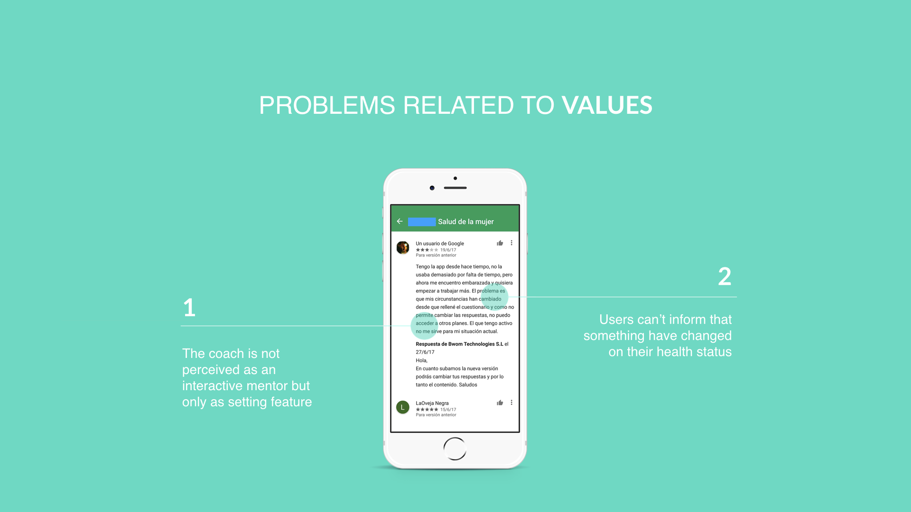
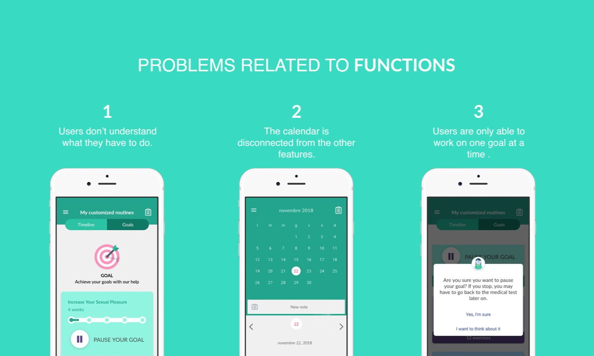
Problem related to values
The coach is not perceived as a mentor but as a setting feature - we found out that one of the main values of **** is offering a coach for women, but the functionality of the app today does not allow the users to communicate with the coach in a one to one dynamic.
Linked to this fact, is the one that users can’t currently report when something have changed on their health status, which turns all the personification of the app in a static settlement of information.
Problem related to functions
That the users do not understand what they have to do once they settle one of the goals, they get confused and find difficult to locate the exercises that they have to do.
Another problem we individuate is that the calendar is just a recording tool and is not currently connected to the other features of the app.
The last problem that we are responding to, is that the users are not able to develop more that one goal at a time. We found this problem restrictive because does not allow the users to work on the various issues that they want to resolve or improve.
So, how do we aimed to solve these problems?
In first place, we identified two important starting points in order to give a solution to the mentioned problems.
In one side is the personalization, an in the other one the fact of giving relevance to time.
By the strengthen of personalization we want to give the possibility to the user not only of achieving its goals but also of feeling that they have someone closer that is taking care of them and that they can call on.
By resolving this problem we are giving an emphasis to one of the values of the brand, which is being a coach for women’s health.Instead, the fact of giving relevance to time, allows us to model the service based not only on the user needs but also letting them choose their availability of time.
In this way we touch one of the missions of **** that is allowing the women to take the control of their wellness, not only by practicing but by deciding how and when to do it.
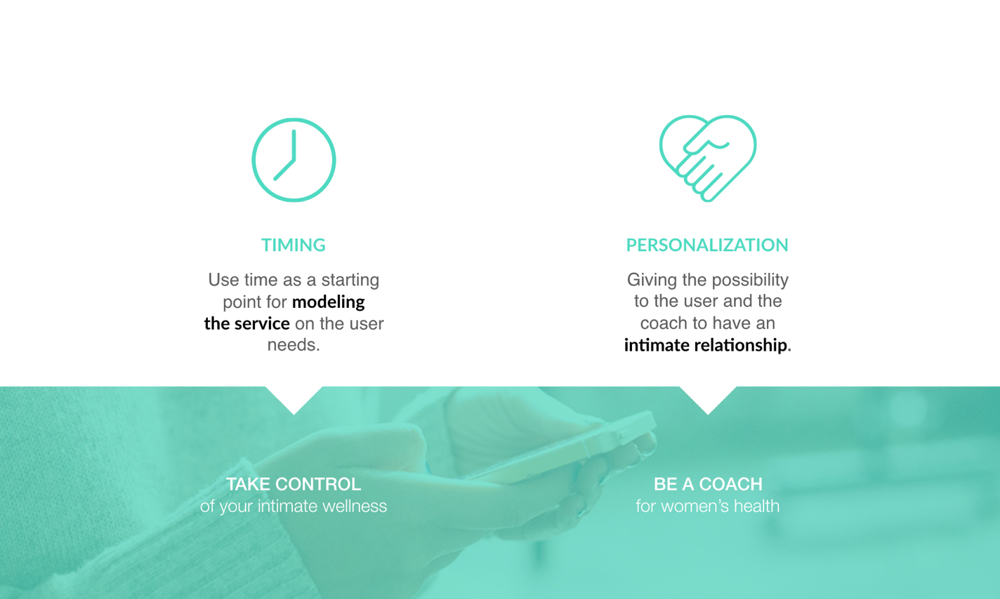
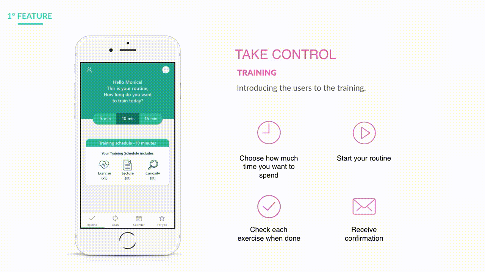
Features N.1
Under the value of allowing the woman to take control of her process, the objective of this feature is introducing her to the training routines and guide her through them.
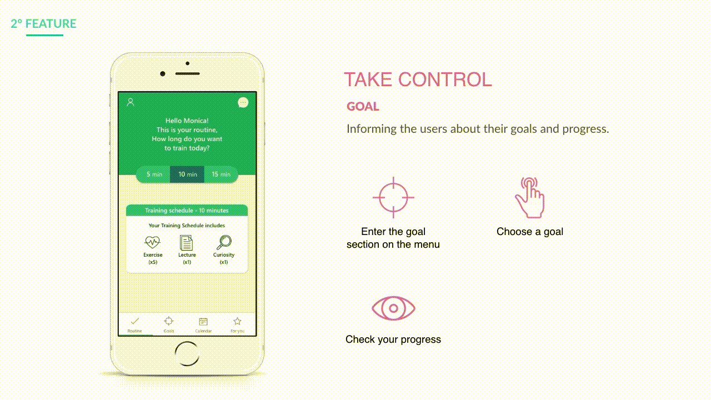
Features N.2
Another feature that allows the users to take control is being informed, learn and follow their own progress within the goals to achieve.
Personalization
Regarding to the personalization of the relationship between the coach and the user, we individuated four different stages where the flow of the information interacts in different ways:
The first contact happen on the on boarding where the flow is developed from the coach asking to the user the needed information for settling the goals.
The second flow is the feedback given after finishing the exercises, where the coach ask the user (weekly) how is she feeling about her routines.
The third one happens in the chat, where is developed backwards because is the user who gives the information (when something changed) to the coach so that it can suggest new exercises.
The last flow, is a mixed interaction where is the user who gives (record) the information on the calendar, then this information is identified by the coach and finally is the coach who gives an alert or suggestion to the user.
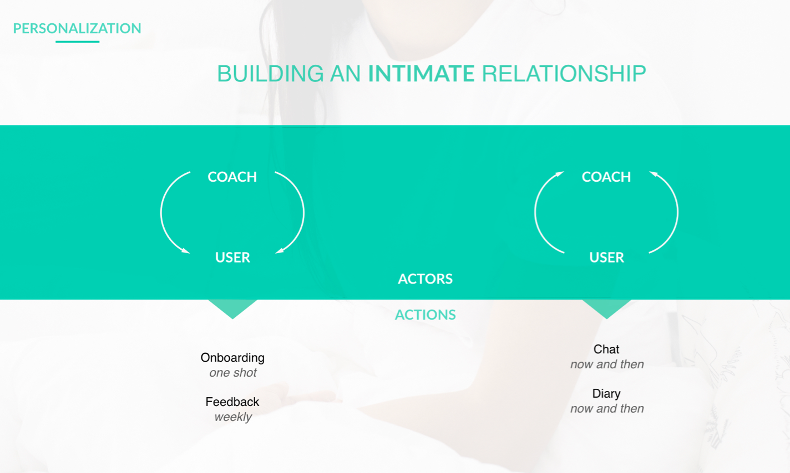
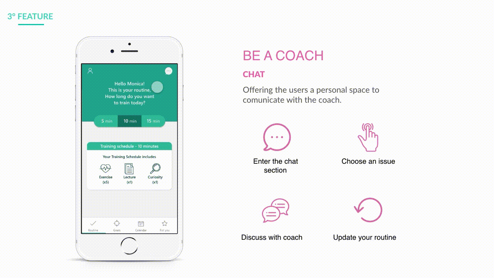
Features N.3
Allows **** being a coach, because through the chat the user find a space to communicate, discuss and update her actual routines.
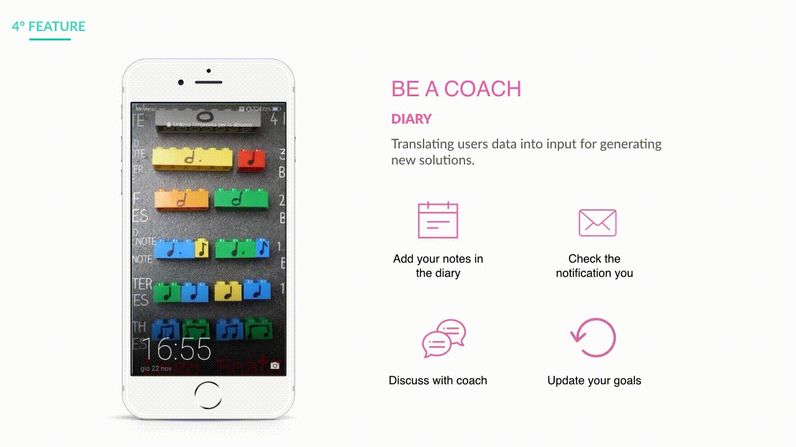
Features N.4
One of our objectives is also allowing **** to offer a systemic service, this in terms of taking advantage of each tool inside the app and connect them. In this case the calendar evolves from just a recording tool to a tracking tool that not only receive information but that is able to perceive changes and propose new possibilities.
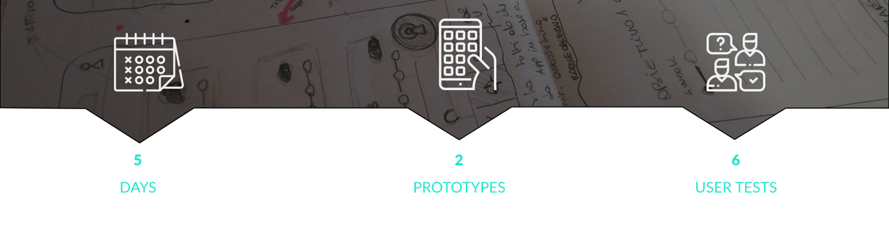
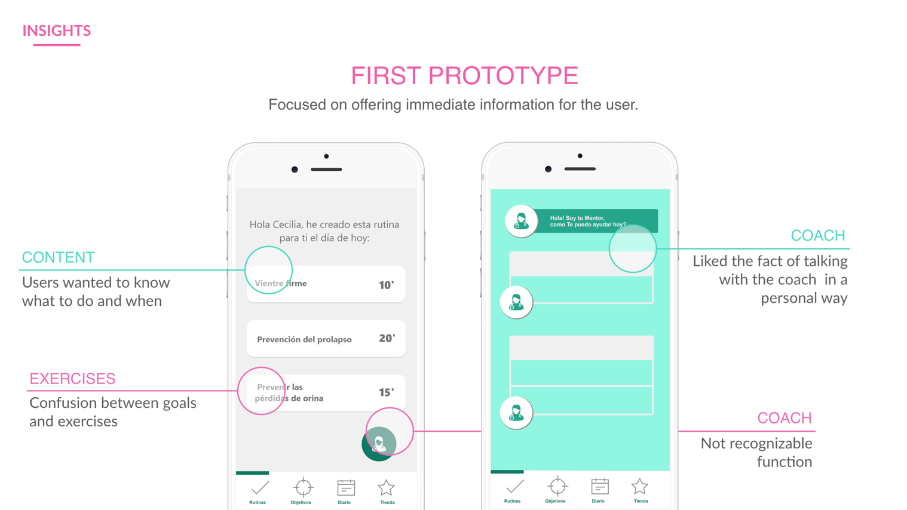
In the first prototype, we focused on giving the information to the users in an immediate way, so that they could understand once they opened the app what they had to train and how.
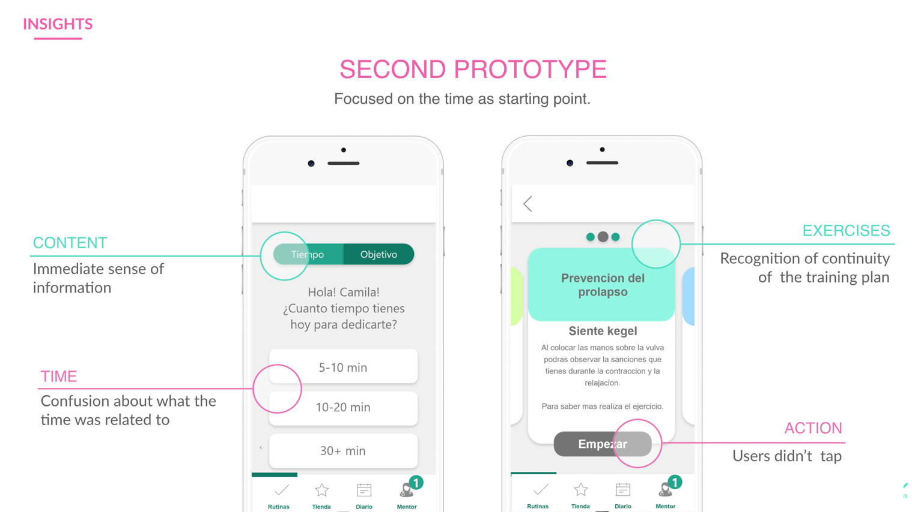
Instead, on the second prototype, our focus was the time.
Based on this insights, we used the best of each prototype and created a better solution